Team: Group C1-3 🌸
Topic: C1 (Go Runners) — EchoRun
Eyes-free AI Ghost Pacer: Running with personalised auditory companionship.
ID: 2363292
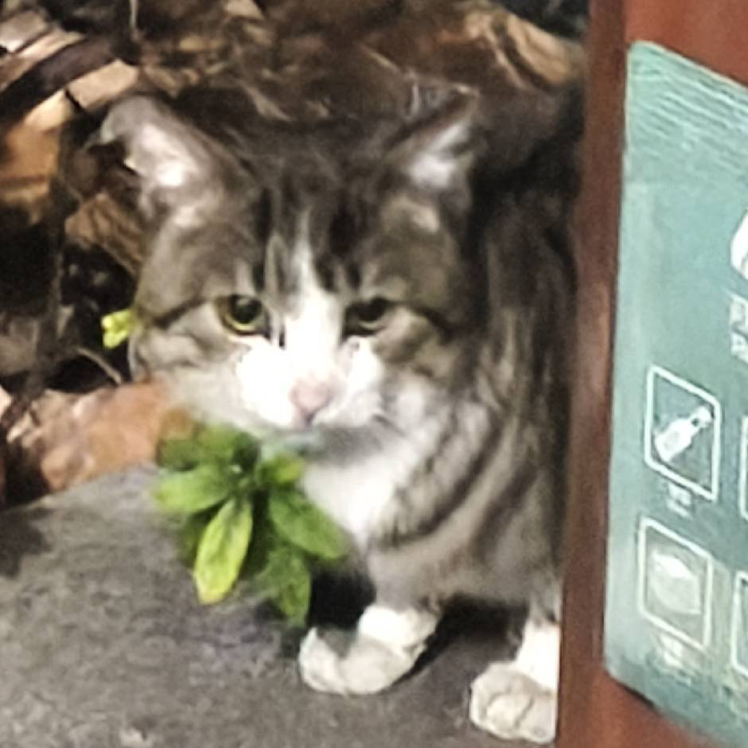
ID: 2361072
ID: 2361896
ID: 2363272
The surge in AI technology and the growing trend of public fitness have accelerated the development of running-assistive applications. However, despite its popularity, maintaining long-term motivation remains a critical challenge, often leading to high dropout rates. Our field interviews indicate that many solo runners experience feedback poverty, where the lack of immediate reinforcement results in fatigue and disengagement.
From an Equality, Diversity, and Inclusion perspective, many existing solutions rely heavily on visual interaction, which can be inaccessible or unsafe during physical activity. This highlights the need for more inclusive, eyes-free interaction modalities. Furthermore, prior research suggests that fitness gamification often lacks a clear balance between engagement and domain appropriateness [1], limiting its long-term effectiveness.
Guided by Self-Determination Theory, this project aims to enhance users’ sense of competence and autonomy through meaningful feedback and adaptive interaction. In addition, studies show that humanized AI design can significantly improve user immersion and engagement [2]. Therefore, EchoRun explores a human-centric approach to delivering real-time, personalized, and non-visual feedback to support a more engaging and sustainable running experience..
Includes: Running Motivation Analysis
Four competitor products are analysed to identify design opportunities:
Alice · 22 · University Student
"I want to be disciplined, but running alone in the dark just feels lonely and repetitive."
Pain: Social anxiety prevents group runs; loses motivation midway due to lack of interaction; finds raw data "boring."
Goals: Build a sustainable habit through emotional companionship and playful, non-task-like engagement.
EchoRun Fit: Alice uses the "Gentle Supporter" mode. The AI provides emotional feedback that makes her feel accompanied on campus, turning a "chore" into a supportive journey.
Jason · 27 · Software Engineer
"Checking my phone mid-sprint kills my flow. I need to know my pace *while* I'm pushing my limits."
Pain: Post-run data is too late for adjustment; lacks real-time competitive context; generic voice cues are uninspiring.
Goals: Real-time performance tuning and dynamic stimulation to break personal records during long runs.
EchoRun Fit: Jason utilizes "Ghost Racing". The audio feedback provides instant gap analysis against his PB (Personal Best), allowing him to adjust effort without glancing at a screen.
| Stage | ① Pre-run Setup | ② Ghost Selection | ③ Running — Ahead | ④ Running — Behind | ⑤ AI Coach Trigger | ⑥ Post-run Review |
|---|---|---|---|---|---|---|
| Actions | Opens EchoRun, chooses "Sarcastic Coach" persona | Browses friends' public records; picks a target to beat | Holds pace; monitors gap on glanceable UI with one glance | Pace drops; ghost pulls ahead; gap widens | Earpiece fires sarcastic taunt; Brian accelerates instinctively | Reviews pace chart and gap timeline; considers sharing result |
| Thoughts | "I want something that actually pushes me." | "My friend did 5 km in 26 min — I can beat that." | "This is going well — I don't need to check my phone." | "I'm losing ground but I don't want to look at the screen." | "Did it just say that?! Fine — I'll prove it wrong." | "Nearly caught up. I'll break the record next time." |
| Emotion | ● Neutral | ● Excited | ● Confident | ● Frustrated | ● Surge of rivalry | ● Accomplished |
| Pain Points | Onboarding requires too many taps | No sorting by distance or difficulty | — | No feedback unless he looks at screen — core pain | Risk of audio delay breaking the emotional moment | Wants richer breakdown and social sharing |
| Opportunities | Streamline persona selection to under 2 taps | Filter friends by distance and pace range | Keep glanceable UI to one large number | Audio trigger = core EchoRun value proposition | Minimise latency via local rule engine (under 200 ms) | Add challenge-back button and social share |
Curve plotted from primary observations and Wizard of Oz study participant verbal feedback (n = 8). The steepest emotional dip at stage ④ directly motivates EchoRun's eyes-free audio design.
The "Silent Drop": When Brian falls behind, there is zero feedback unless he glances at his screen. Like the "Black Box Wait" scenario in lecture, the user feels a total loss of control — and unlike that case, looking down mid-sprint is physically dangerous.
Proactive Audio Transparency: The event-triggered AI coach fires a contextual audio cue the moment the distance gap crosses a threshold. This converts the frustration dip into a motivational spike — directly addressing the deepest drop-off on the emotional curve.
Running alone is often a chore. This feature turns a workout into a "Mario Kart" style time-trial, tapping into our competitive nature to win a real-time race.
ImplementationOverlay a "Ghost" runner on the live map based on historical GPS data, allowing users to track their relative position and pace.
No more cold, robotic data. Our AI Coach acts like a "buddy" who cheers or playfully roasts you, creating a sense of companionship and reducing mental fatigue.
ImplementationTrigger personality-driven feedback (voice/text) based on real-time performance milestones or pace drops.
By giving every step a tangible "score," the fitness journey feels more like an RPG progression system, satisfying the human need for status and achievement.
ImplementationA point-based economy where users earn rewards for beating Ghost records, used to unlock badges and climb global leaderboards.
Who we talked to: The students who are running on the playground.
Key Discovery: Runners need more than just data — they seek companionship, visualized progress, and healthy competition to stay motivated. Standard tracking apps often feel lonely and lack the emotional engagement needed for long-term adherence.
Following the WoZ prototyping method (CPT208 Lecture 03), we pre-recorded two audio conditions and had 8 XJTLU students evaluate them — testing the HCI experience before committing to production AI integration.
Based on our A/B Test script, we've developed 10 audio triggers across 5 key running scenarios to compare user engagement between a neutral assistant and a challenging motivator.
Direct, factual, and neutral tone.
"Run started. Tracking your pace..."
"Pace dropping. You are currently behind..."
"Pace increasing. You are now ahead..."
"Approaching the finish line..."
"Run complete. Session data saved."
Witty, challenging, and emotionally evocative.
"Don't dilly-dally... don't be a coward."
"Even a ghost would think you're too slow."
"Slacking off? You can't afford the consequences."
"This speed doesn't match your ambition."
"This result is not good enough."
| Dimension | Group A (Neutral) | Group B (Sarcastic) | Outcome |
|---|---|---|---|
| Motivation Boost | 25% | 87.5% | Significant Win |
| Gaming Immersion | 12.5% | 100% | Immersion Leader |
| User Preference | 2 users | 6 users | Final Choice |
Real data shows that 75% of participants overwhelmingly chose Group B (sharp tongued style). Although 25% of users are concerned about being offended, all participants acknowledge that Group B has a significant advantage in terms of gameplay. This proves the core value of EchoRun: breaking the monotony of solo running through emotional and personified audio feedback.
Data visualization & chart generation: The charts and graphs in this section (motivation scores, audio preferences, feedback statistics, etc.) are generated by Claude 4.6 Sonnet using the original questionnaire data (n=8) collected via WeChat as prompts. The survey data was converted into the SVG charts shown above with the assistance of artificial intelligence
Human verification: All generated charts and statistical data have been manually reviewed based on the questionnaire survey data to ensure accuracy. The journey map and design decisions remain our original works, without the use of AI.
Citation: Claude Sonnet 4.6, accessed 2026-03-30, https://claude.ai. Used for generating SVG charts and statistical summaries from raw questionnaire data.
Click cards to flip through our ideation process
We evaluated three interaction paradigms. Per the lecture fidelity guidance, we chose the prototype type that answers our core hypothesis with the cheapest, fastest method — not the most polished one.
Always-on visual dashboard (Strava-style)
✔ Familiar to experienced runners
✔ Rich data visibility
✘ Requires repeated screen glances
✘ Safety hazard on roads
✘ Breaks Flow State
Rejected — contradicts our eyes-free principle and increases cognitive load, the exact problem we aim to solve.
Live LLM call on every trigger event
✔ Fully dynamic responses
✔ More conversational feel
✘ API latency 1 to 3 seconds destroys the emotional moment
✘ Requires constant network
✘ Cost unsustainable at free tier
Rejected — high fidelity that limits our ability to rapidly pivot if the concept fails, exactly the trade-off warned against in the lecture.
Local rule engine + pre-rendered persona TTS
✔ Zero-latency audio under 200 ms
✔ Works fully offline
✔ WoZ-testable at 70% fidelity
✔ Matches prototype fidelity to the question we need to answer now
✘ Pre-scripted responses less varied
✘ Threshold calibration needed
Chosen — best supports runner Flow State, enables safe eyes-free use, and lets us validate our core hypothesis via a WoZ study before committing to full AI integration.
Preview: This low fidelity prototype showcases the core journey from AI coach selection, Ghost selection to starting running.
Chart and Low-Fi Prototype generation: All inline SVG charts were generated with Claude assistance based on real collected data and real decision we made. The low fidelity prototype was generated by Figma, using our own designed website concept as a prompt.
Citation: Claude Sonnet 4.6, accessed 2026-03-30, https://claude.ai. Used for chart generation and Low-Fi Prototype generation.
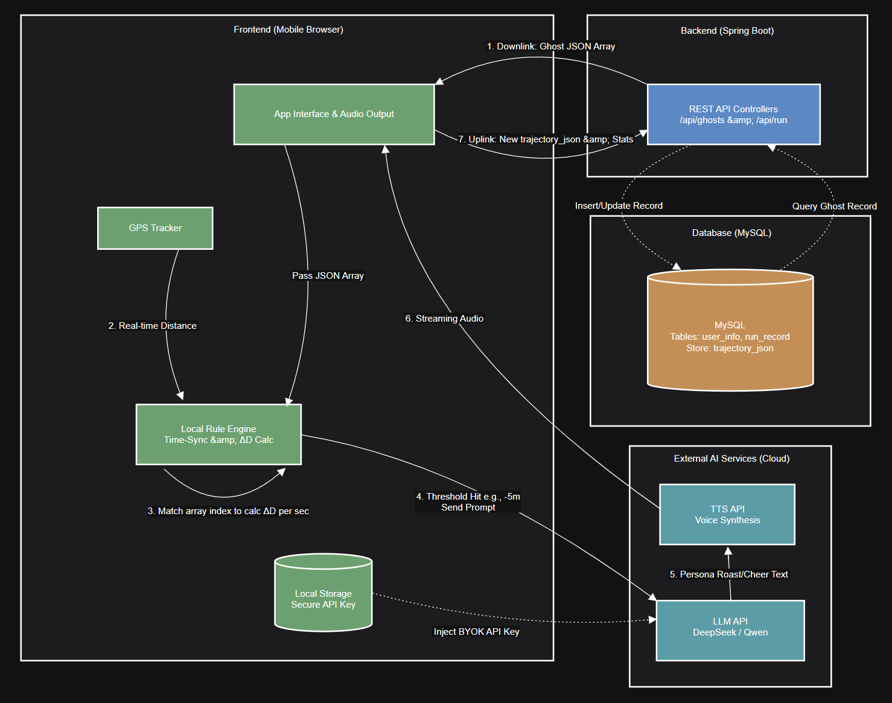
Our system is designed on a three-tier architecture: a Vue-based Mobile Frontend, a Spring Boot Backend, and external AI Cloud Services.
Prototype Note: For this prototype, we utilize simulated data to mimic backend services, solely concentrating on validating the frontend user experience.
Experience the fully interactive EchoRun interface in your browser.
Compatible with Chrome, Safari, and Edge
| Name | Code | UI Design | Content | Testing | Total Contribution |
|---|---|---|---|---|---|
| Xinling Du | 25% | 25% | 25% | 25% | 25% |
| Zairan Shi | 25% | 25% | 25% | 25% | 25% |
| Lingyu Wang | 25% | 25% | 25% | 25% | 25% |
| Peilin Liu | 25% | 25% | 25% | 25% | 25% |
We executed five major design iterations based on continuous user testing and emotional feedback.
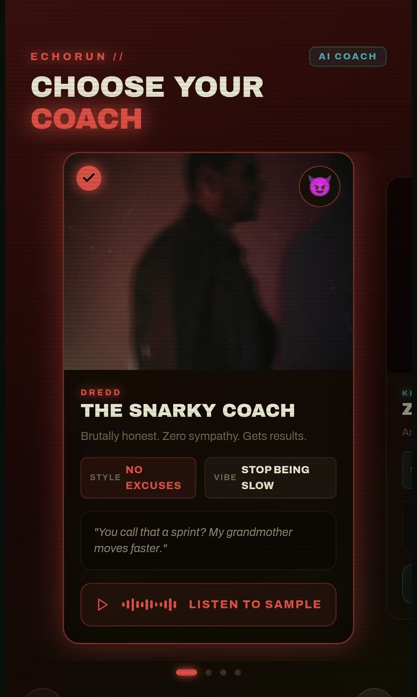
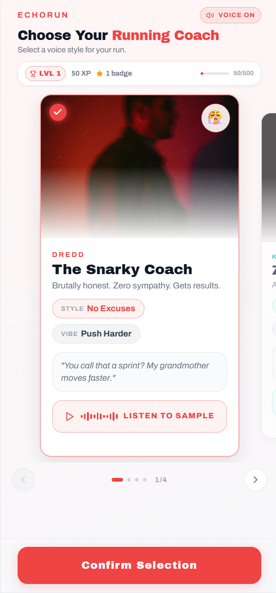
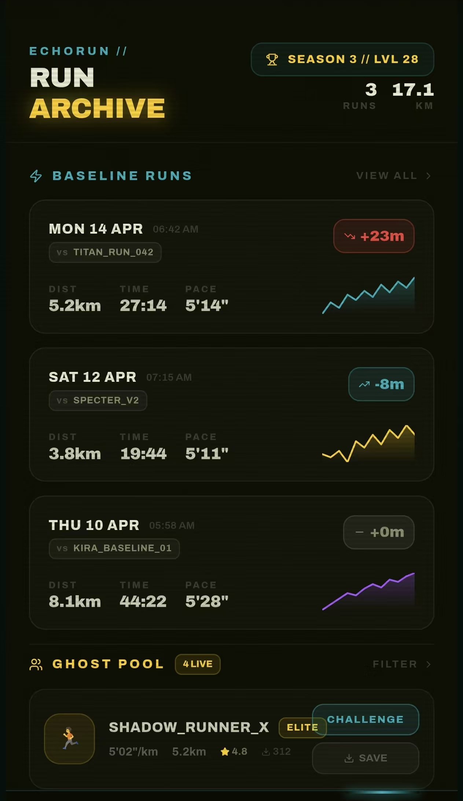
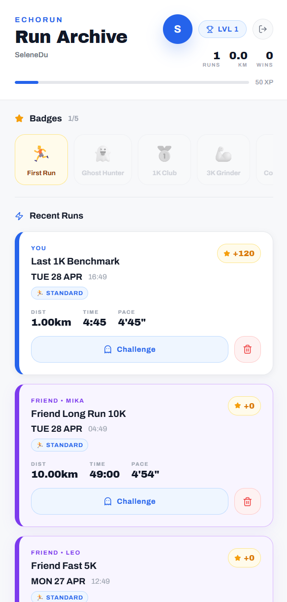
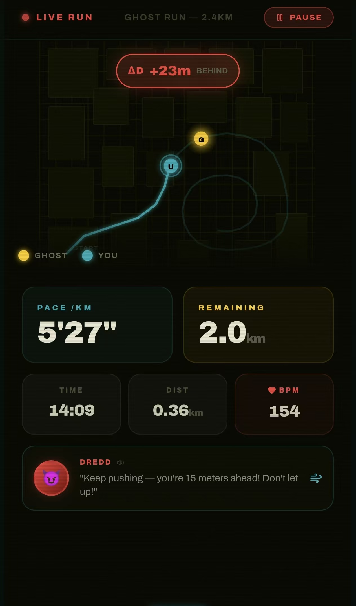
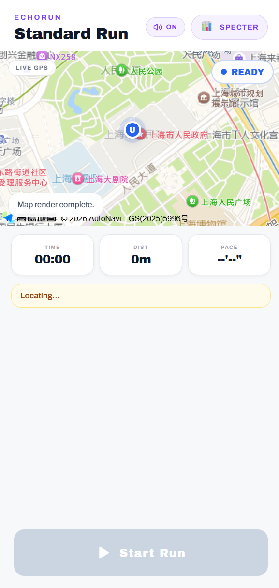
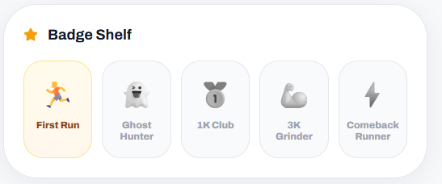
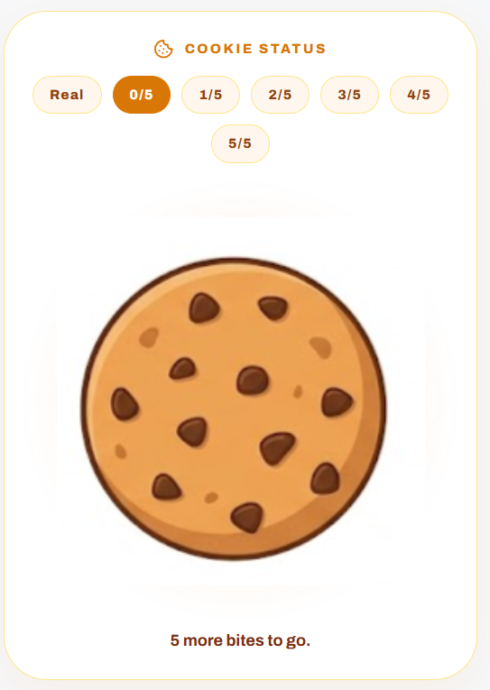
0 medal: No Bite
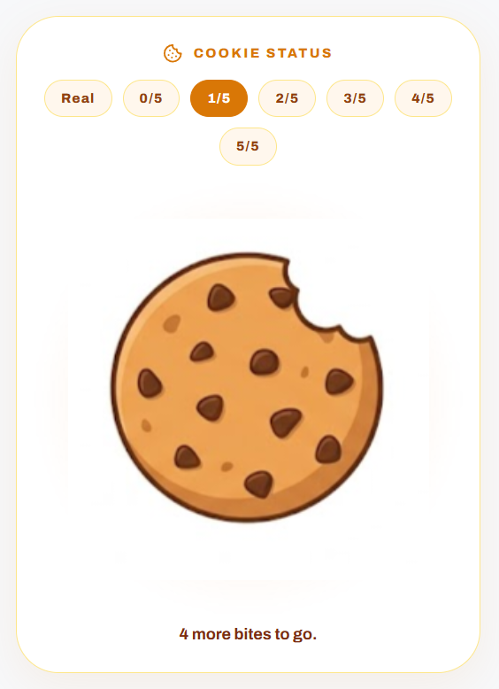
1 medal: 1st Bite
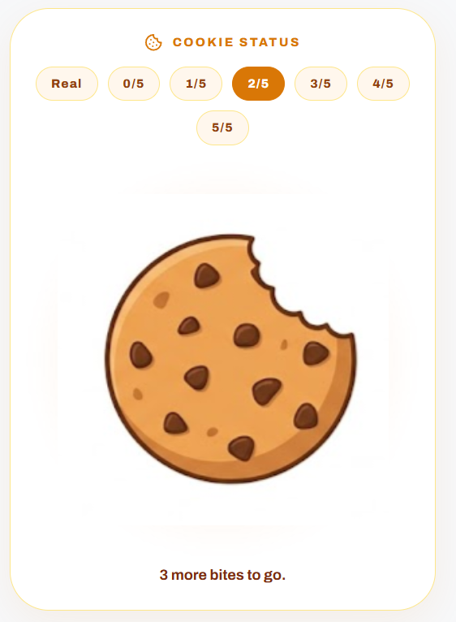
2 medals: 2nd Bite
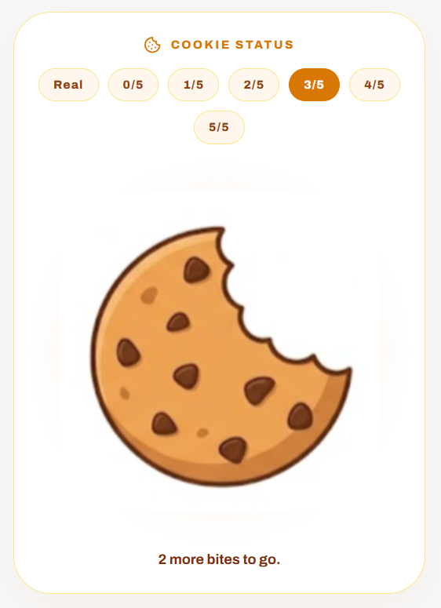
3 medals: 3rd Bite
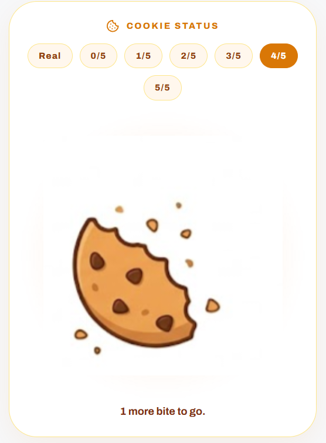
4 medals: 4th Bite
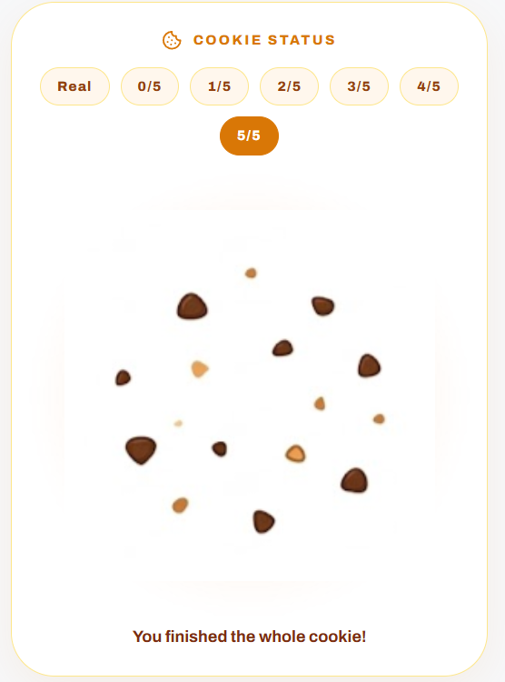
All 5 medals collection: Fully Eaten
Step 1: Choose AI coach
The core design concept of EchoRun is "Positive Pressure". Through AI ghost running companions and stylized voice coaching, we aim to lower the psychological barrier to starting running, making exercise more fun and accompanied. In the current social context, sedentary lifestyles and lack of exercise have become widespread health issues. EchoRun attempts to use a low-cost digital companionship solution to motivate more people to go outside and develop regular exercise habits.
However, this design also brings ethical issues that need reflection. First, although the "sarcastic coach" increases engagement and fun, it is not suitable for everyone. For some users (such as exercise beginners or those with low self-efficacy), continuous sarcastic feedback may have the opposite effect, even increasing anxiety. To address this, we provide a gentle, encouraging voice option in the system, allowing users to choose their preferred companionship style based on their own mental state, reflecting respect for user psychological diversity.
Second, the "ghost running" mechanism in EchoRun simulates the experience of competing with others. This design satisfies users' social and competitive needs to some extent, but may also lead to excessive competition or data comparison anxiety. Our solution is: the ghost's data comes from the user's own past records, not from other runners' data, thus transforming competition into "comparing with your past self," weakening the pressure of comparing with others and emphasizing self-growth.
From a broader social impact perspective, AI sports companionship tools like EchoRun could be applied in community health promotion and school physical education in the future, providing a low-threshold, personalized motivational method for those lacking sports community support. At the same time, we recognize that digital tools cannot completely replace real interpersonal companionship and a sense of community belonging. Therefore, EchoRun positions itself as an "assistant" rather than a "substitute."
[1] C. Lister, J. H. West, B. Cannon, T. Sax, and D. Brodegard, "Just a Fad? Gamification in Health and Fitness Apps," JMIR Serious Games, vol. 2, no. 2, e9, Aug. 2014, doi: 10.2196/games.3413.
[2] H. S. J. Chew, "The Use of Artificial Intelligence–Based Conversational Agents (Chatbots) for Weight Loss: Scoping Review and Practical Recommendations," JMIR Medical Informatics, vol. 10, no. 4, e32578, Apr. 2022, doi: 10.2196/32578.
[3] B. Van Hooren, J. Goudsmit, J. Restrepo, and S. Vos, "Real-time feedback by wearables in running: Current approaches, challenges and suggestions for improvements," Journal of Sports Sciences, vol. 38, no. 2, pp. 214–230, Dec. 2019, doi: 10.1080/02640414.2019.1690960.
[4] B. C. DiMenichi and E. Tricomi, "The power of competition: Effects of social motivation on attention, sustained physical effort, and learning," Frontiers in Psychology, vol. 6, p. 1282, Sep. 2015, doi: 10.3389/fpsyg.2015.01282.
[5] M. Promberger and T. M. Marteau, "When do financial incentives reduce intrinsic motivation? Comparing behaviors studied in psychological and economic literatures," Health Psychology, vol. 32, no. 9, pp. 950–957, Sep. 2013, doi: 10.1037/a0032727.
[6] M. Kranz, A. Möller, N. Hammerla, S. Diewald, T. Plötz, P. Olivier, and L. Roalter, "The mobile fitness coach: Towards individualized skill assessment using personalized mobile devices," Pervasive and Mobile Computing, vol. 9, no. 2, pp. 203–215, Apr. 2013, doi: 10.1016/j.pmcj.2012.06.002.
[7] F. R. Simoni and L. B. Espartel, "Emotional artificial intelligence: The impact of chatbot empathy and emotional tone on consumer satisfaction and word of mouth," International Journal of Human–Computer Studies, vol. 210, p. 103764, 2026, doi: 10.1016/j.ijhcs.2026.103764.